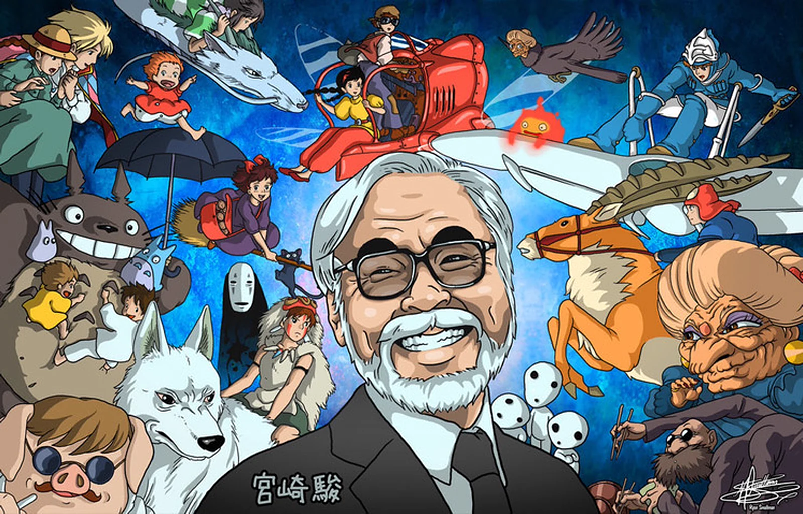

Неофициальная фанатская история
интерактивная одиссея по мирам Хаяо Миядзаки
История завершена
Миры, которые ты уже прожил. Каждая история — дверь в чужое небо.
«Ветер между мирами» — неофициальная фанатская визуальная новелла. Старик засыпает над книгой и во сне проживает тринадцать жизней: он просыпается главным героем каждого мира Хаяо Миядзаки, проходит его историю до конца и перевоплощается в следующего героя. В финале он возвращается в комнату, где на полках стоят тринадцать книг.
Все миры, персонажи и их вселенные принадлежат Хаяо Миядзаки, Studio Ghibli и правообладателям. Проект некоммерческий, не связан с правообладателями и создан из любви к этим историям. Все реплики в игре — оригинальные, а не цитаты из фильмов. Портреты персонажей — официальные кадры и изображения Studio Ghibli, а также материалы Studio Ghibli Wiki (ghibli.fandom.com), Lupin Wiki (lupin.fandom.com), кадр citaty.info для Клариссы и постер Кинопоиска для Конана и Ланы; они используются в некоммерческом фанатском проекте, а права на них принадлежат Studio Ghibli и правообладателям. Иллюстрации юного героя и пожилой пары предоставлены автором проекта.
Музыка в игре — оригинальные процедурные темы, вдохновлённые настроением каждого мира. Это не записи из аниме и не их фрагменты: каждая тема синтезируется прямо в браузере. Так проект остаётся полностью офлайн-совместимым и не использует чужие аудиозаписи.
Фон главного меню — коллаж, найденный в открытом доступе. Финальный кадр — фанатская иллюстрация, найденная в открытом доступе. Фоны тринадцати миров — официальные кадры, пейзажи и фоновые рисунки из фильмов Studio Ghibli, используемые в некоммерческом фанатском проекте. Права на изображённых персонажей и исходные материалы принадлежат их правообладателям.
В игре нет проигрыша в привычном смысле: ваши решения меняют оттенок финала. Каждый мир рассчитан примерно на 15 минут спокойного прохождения с выборами, искрой и переходом. Иногда стоит остановиться и прислушаться: в каждом мире спрятаны осколки чужой памяти.
Управление: клик или пробел — продолжить; «Журнал» — история реплик; «Авто» — авточтение. Музыка и шум ветра синтезируются прямо в браузере. Кнопка «Голос» включает озвучку реплик системным речевым движком вашего устройства — тембр и темп у каждого героя свои.
Создано как интерактивный подарок. Сохраняется автоматически в вашем браузере.
Прогресс сохраняется автоматически.